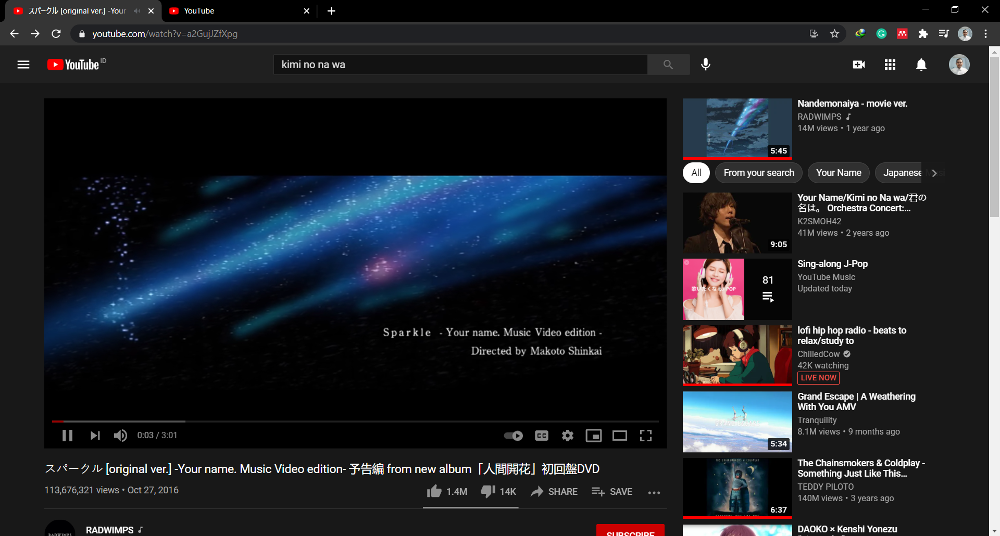
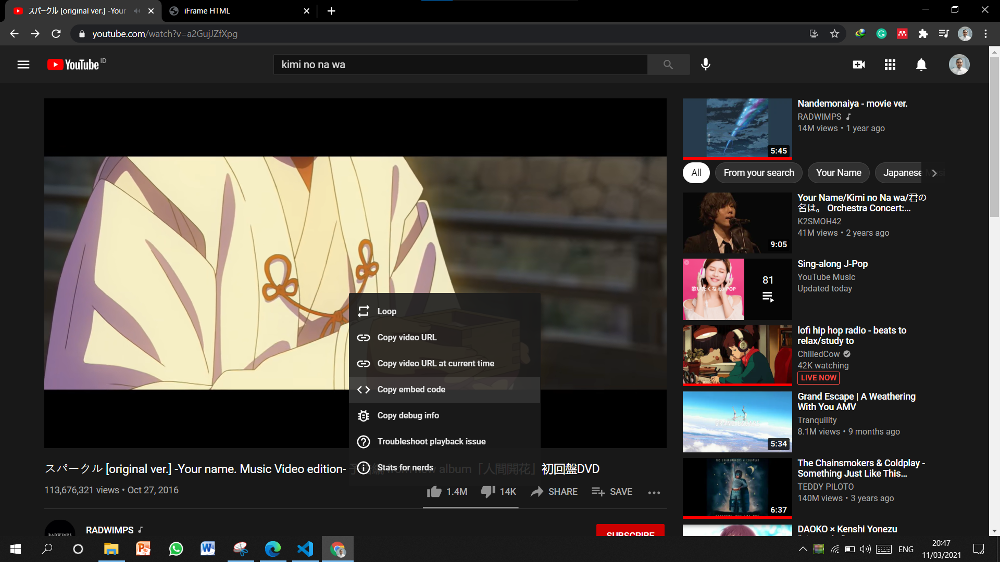
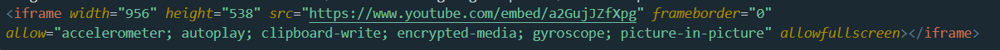

iFrame adalah in line frame atau frame di dalam frame. iFrame berfungsi
untuk menyematkan suatu halaman, video, ataupun dokumen ke halaman kita.
Caranya yaitu:
Menyematkan dari youtube
Pergi ke halaman yang ingin disematkan dengan menggunakan iFrame. Saya menyematkan video dari youtube.
Jadi saya pergi ke youtube, dan menuju ke halaman yang saya inginkan.

Klik kanan pada layar youtube kemudian pilih copy embed code.

Pergi ke file html dan langsung paste-kan sehingga jadi seperti ini:

Hasilnya akan menjadi seperti ini :